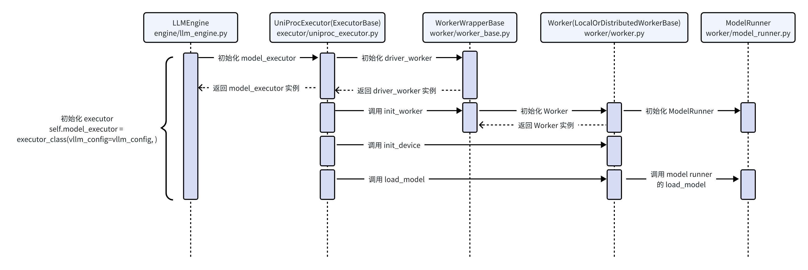
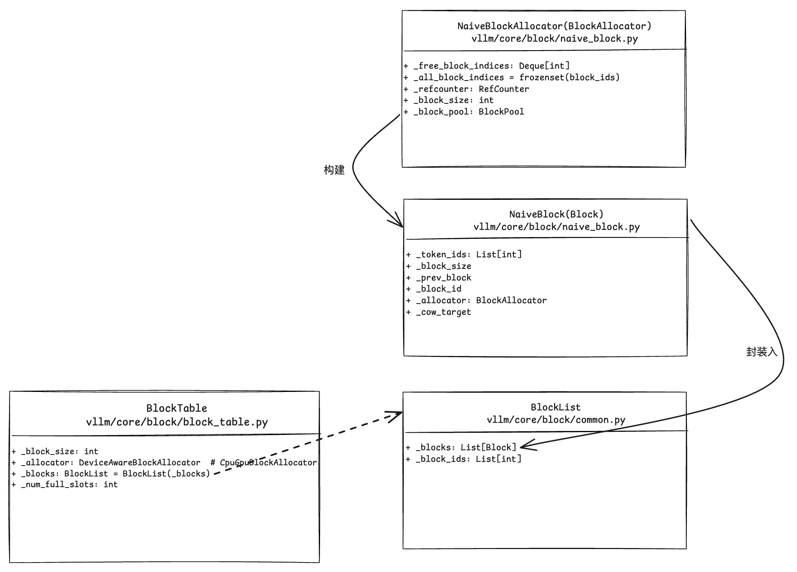

vLLM 源码阅读 (part1)
说明：基于 vLLM v0.7.3，commit id:
ed6e9075d31e32c8548b480a47d1ffb77da1f54c (HEAD, tag: v0.7.3)
PagedAttention
提出：解决 KV Cache 不连续导致的利用率不高问题。
KV Cache 利用率不高的问题：（可参考 pagedattention paper）
- 事先不知道请求的长度（prompt + output），如果提前分配过大的空间会导致浪费，产生内部碎片（internal fragmentation）；过小又无法分配给其他请求，产生外部碎片（external fragmentation）。
- 无法共享空间，如 beam search 等解码算法会针对一个请求生成多个输出，现有系统无法使多个输出共享一个 prompt。
原理

vLLM 的推理
推理的示例程序：
1 | from vllm import LLM, SamplingParams |
初始化流程
接口类 LLM
LLM 类的初始化：
1 | # entrypoints/llm.py |
构造 LLMEngine：
1 | # engine/llm_engine.py |
LLMEngine 类
LLMEngine 初始化：
1 | # engine/llm_engine.py |
LLMEngine 初始化流程涉及如下几个核心类或组件的初始化。
- executor, Worker 初始化
executor 初始化时序图如下：
Worker 初始化：
1 | # vllm/worker/worker.py |
LLMEngine 初始化中，_initialize_kv_caches 初始化 KV Cache，具体如下：
1.1 先计算可用的 GPU、CPU blocks 数量
1 | # vllm/worker/worker.py |
计算 cache_block_size：
1 | # vllm/worker/cache_engine.py |
1.2 初始化 kv cache
1 | # vllm/worker/worker.py |
- Scheduler 初始化
1 | # vllm/core/scheduler.py |
LLM generate 逻辑
generate 的逻辑流程：
- for-loop 每个 prompt、sampling_param，并将 prompt、sampling_param 作为 request 参数添加给
llm_engine的 request pool。
a. input_processor 做一些输入 prompt 的处理；
b. 将处理过的 prompt (tokens) 封装成Sequence，seq 再封装进SequenceGroup；
c. 将封装成的seq_groupappend 到scheduler的waiting队列，以待后续处理任务的使用。
上述流程涉及的关键代码：
1 | # entrypoints/llm.py |
Sequence 和 SequenceGroup 类关系图如下：
- 然后调用
self._run_engine()进行实际的调度和推理。
1 | # entrypoints/llm.py |
llm_engine调用step，scheduler负责调度，model_executor负责实际的推理。
调度
总的调度逻辑如下。
1 | # core/scheduler.py |
关于 prefill 阶段的调度：
1 | # core/scheduler.py |
关于 decode 阶段调度：
1 | # core/scheduler.py |
swapped 的调度：
1 | # core/scheduler.py |
block manager
在上述调度中，有一个很重要的判断是 kv cache 的分配情况，这个由 block_manager 实际管理。
1 | # vllm/core/block_manager.py |
block manager 中涉及的几个重要类的关系如下：
scheduler 中 _schedule_prefills 时，会调用 self.block_manager.can_allocate 判断是否能够成功分配 block 给 seq_group：
1 | class SelfAttnBlockSpaceManager(BlockSpaceManager): |
参考
- vllm paper. arxiv
- vLLM First SF Meetup Slides (Public). slide
- 知乎专栏：https://zhuanlan.zhihu.com/p/680153425